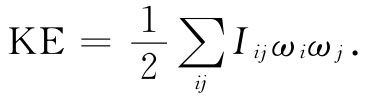

还有许多其他张量的例子出现在物理学中。例如，在金属或任何导体中，人们经常发现电流密度j近似地正比于电场E，比例常数称为电导率σ：
j=σE.
可是，对于晶体来说，j与E的关系就比较复杂了；电导率并非在所有方向都是一样的。电导率乃是一个张量，因而可以写成
ji =∑σij Ej .
物理张量的另一个例子是转动惯量。在第1卷第18章中我们曾经见过，一块固体绕某一固定轴旋转时就有一个与角速度ω成正比的角动量L，而我们称这个比例因数I为转动惯量：
L=Iω.
对一任意形状的物体，转动惯量与物体相对于转动轴的取向有关。例如，一块矩形板对于它的三个正交轴的转动惯量就各不相同。现在角速度ω和角动量L两者都是矢量。对于绕每一根对称轴的转动，它们彼此互相平行。但如果对于三根主轴转动惯量各不相同，则一般说来，ω和L就不会在同一个方向上（图31.4）。它们以类似于E和P间关系的方式互相联系着。一般说来，我们应当写出
图31-4 一般说来，一块固体的角动量L并不平行于其角速度ω
这九个系数Iij 称为惯量张量。按照与极化的类似性，任何角动量的动能理应为角速度分量ωx ，ωy 和ωz 的某种二次型：
 （31.17）
我们可利用能量来定义惯量椭球。并且，关于能量的论证也可用来证明该张量是对称的，即Iij =Iji 。
若一刚性物体的形状为已知，则该物体的惯量张量便可以算出来。我们只需写下该物体中所有粒子的总动能。一个质量为m而速度为v的粒子具有动能 ，而总动能就不过是对该物体中所有粒子的动能求和
每个粒子的速度v与固体的角速度ω有关。现在假定，物体在绕我们认为静止的质心旋转。那么，若r是从质心到粒子的位移，则其速度v由ω×r给出。因此总动能为
眼前必须做的就是用ωx ，ωy ，ωz 各分量和x，y，z写出ω×r，并将这一结果与式（31.17）做一比较，通过识别各项以找出Iij 。在进行代数运算时，我们写出
对这一方程乘以m/2，对所有的粒子求和，并同式（31.17）做比较，我们见到，例如Ixx由下式给出：
Ixx =∑m（y2 +z2 ）.
这就是我们以前（第1卷第19章）曾经得到过的关于物体绕x轴的转动惯量公式。由于r2 =x2 +y2 +z2 ，也可将这一项写成
Ixx =∑m（r2 -x2 ）.
算出所有其他各项，则惯量张量便可以写成
如果你乐意的话，还可以按“张量符号表示法”写成
Iij =∑m（r2 δij -ri rj ）， （31.20）
式中ri 是某个粒子位置矢量的（x，y，z）分量，而∑则意味着对所有粒子求和。于是转动惯量就是一个二阶张量，其中各项代表物体的一种属性，并且通过下式将L与ω联系起来：
（31.21）
对于不管什么形状的任何物体，我们都能够找到惯量椭球，从而找到三个主轴。对于这些轴来说，该张量将是对角的，所以对于任何物体就总存在三个互相正交的轴，绕这些轴的角速度与角动量互相平行。它们被称为惯量主轴。